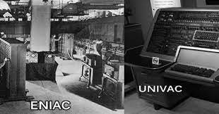
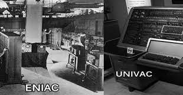

FIRST GENERATION COMPUTERS...!!
- The period of first generation was from 1946-1959.
- The computers of first generation used vacuum tubes as the basic components for memory and circuitry for CPU (Central Processing Unit).
- These tubes, like electric bulbs, produced a lot of heat and the installations used to fuse frequently.
Therefore, they were very expensive and only large organizations were able to afford it.
- In this generation, mainly batch processing operating system was used. Punch cards, paper tape, and magnetic tape was used as input and output devices.
- The computers in this generation used machine code as the programming language.
- Eg. ENIAC,
EDVAC,
UNIVAC,
IBM-750, etc.
 


Advantages :
- It was only electronic device at that period.
- It was the first device to hold memory.
Disadvantages :
- It was too bulky i.e large in size.
- In these types of computers vacuum tubes burn frequently.
- Theyse types of computers were producing alot of heat.
- Computers of this generation had a frequent maintenance problems.
For more info click :